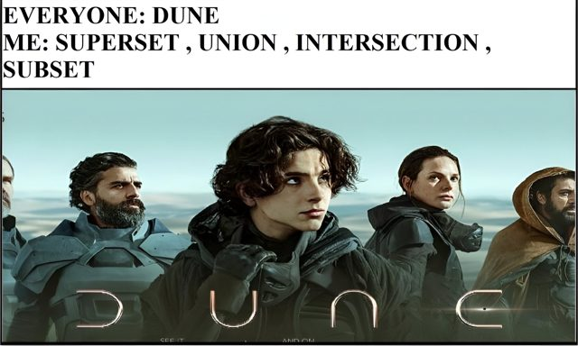

📡 Küldetés-eligazítás

📡 Dr. Bizarr: A Descartes-szorzat és a relációk kötik össze a világokat: melyik pont melyikhez tartozik. Kán a kapcsolatokat rongálja. Ha érted a relációk tulajdonságait, helyre tudod állítani a szakadt szálakat.
Eddig egy-egy halmazt néztünk — most párokat képezünk. A Descartes-szorzatból kapjuk az összes lehetséges rendezett párt, a relációk pedig azt írják le, milyen kapcsolatban állhatnak elemek egymással: kisebb, osztója, egyenlő… Ez a rész a függvények felé vezető utolsó lépcső.
Descartes-szorzat
A Descartes-szorzat René Descartes (1596–1650) nevét viseli. A koordinátasíkon is rendezett párokkal adjuk meg a pontok helyét.
📗 Rendezett pár
A \((x, y)\) rendezett párban számít a sorrend. Egyenlőség: \((x, y) = (a, b) \Leftrightarrow x = a \land y = b\). Ezért \((1, 2) \neq (2, 1)\).
📗 Definíció — Descartes-szorzat
\(A \times B = \{(x, y) | x \in A \land y \in B\}\) — az összes rendezett pár, ahol az első tag A-ból, a második B-ből való.
Elemszám: \(|A \times B| = |A| \cdot |B|\). Általában nem kommutatív: \(A \times B \neq B \times A\) — egyenlőség pontosan akkor áll fenn, ha \(A=B\), vagy valamelyik halmaz üres.
⚠️ Kán csapdája — „a sorrend számít”, de nem mindig
A rendezett pároknál a sorrend valóban számít, ezért \(A \times B\) általában nem egyenlő \(B \times A\)-val. Lehetnek azonban egyenlők is: ha \(A = B\), akkor a két szorzat ugyanaz, és ha valamelyik halmaz üres, akkor mindkét szorzat üres. A pontos állítás tehát: \(A \times B = B \times A\) pontosan akkor, ha \(A = B\), vagy valamelyikük üres. Ezért az „általában különböző” állítást ne cseréljük „mindig különböző”-re.
✏️ Kiképzési szimuláció
\(A = \{1, 2\}\), \(B = \{a, b, c\}\) ⟹ \(A \times B = \{(1,a),\allowbreak(1,b),\allowbreak(1,c),\allowbreak(2,a),\allowbreak(2,b),\allowbreak(2,c)\}\) — összesen \(2 \cdot 3 = 6\) pár.
💡 Jó tudni
\(\mathbb{R} \times \mathbb{R} = \mathbb{R}^{2}\) a teljes koordinátasík: minden \((x, y)\) pár a sík egy pontja. Így a valós számok rendezett párjaival a sík pontjait írhatjuk le. 📈
🎯 Gyors kérdés
Ha \(|A| = 3\) és \(|B| = 4\), mennyi \(|A \times B|\)?
Gyakorolj! Válaszd a bevetésed: (Descartes-szorzat, rendezett párok, elemszám)
Relációk
A reláció megmondja, hogy egy halmaz elemei hogyan „kapcsolódnak” egymáshoz — például: „osztója”, „kisebb”, „egyenlő”.
📗 Definíció — reláció
Az \(A\) és \(B\) közötti reláció az \(A \times B\) egy részhalmaza; ha \(B=A\), az \(A\) halmazon értelmezett (homogén) relációról beszélünk: \(\rho \subseteq A \times A\) — a reflexivitást, a szimmetriát és a tranzitivitást itt ilyen relációkon vizsgáljuk. Ha a két halmaz véges, összesen \(2^{|A|\cdot|B|}\) reláció létezik. Ha \((x, y) \in \rho\), azt írjuk: \(x \rho y\) („x relációban van y-nal”).
📘 Ábrázolás háromféleképp
1) Felsorolás: a rendezett párok listája. 2) Nyíldiagram (gráf): az elemek pontok, a párok nyilak. 3) Táblázat / koordináta-rendszer: a pontok bejelölése.
📗 A négy fő tulajdonság
Reflexív (R): \((\forall x)(x \rho x)\) — minden elem relációban van önmagával.
Szimmetrikus (S): \((\forall x,y)(x \rho y \Rightarrow y \rho x)\) — a nyíl „visszafelé” is megy.
Antiszimmetrikus (AS): \((\forall x,y)(x \rho y \land y \rho x \Rightarrow x = y)\).
Tranzitív (T): \((\forall x,y,z)(x \rho y \land y \rho z \Rightarrow x \rho z)\) — a nyilak „láncolhatók”.
📘 Két különleges reláció
Ekvivalenciareláció = R + S + T (pl. egyenlőség, egybevágóság). Az elemeket ekvivalenciaosztályokba sorolja: egy osztályba az egymással relációban álló elemek kerülnek.
Rendezési reláció = R + AS + T (pl. \(\leq\), \(\subseteq\), „osztója” a pozitív egész számok halmazán).
✏️ Kiképzési szimuláció
\(A = \{-2,-1,0,1,2\}\), és \(x \rho y \Leftrightarrow |x| = |y|\). Elemei: \(\{(-2,-2),\allowbreak(-2,2),\allowbreak(2,-2),\allowbreak(2,2),\allowbreak(-1,-1),\allowbreak(-1,1),\allowbreak(1,-1),\allowbreak(1,1),\allowbreak(0,0)\}\).
Ez R, S, T → ekvivalenciareláció (az azonos abszolút értékű számok kerülnek egy osztályba).
🎯 Gyors kérdés
Az „\(x \text{osztója }y-\text{nak}\)” reláció (ℕ-en) milyen típusú?
🧾 Gyorsismétlő
📗 Jelölések áttekintése
| Jel | Jelentés | Jel | Jelentés |
|---|---|---|---|
| ∈ / ∉ | eleme / nem eleme | ∪ | unió (VAGY) |
| ⊆ / ⊂ | részhalmaz / valódi | ∩ | metszet (ÉS) |
| ∅ | üres halmaz | ∖ | különbség |
| 𝒫(A) | hatványhalmaz | △ | szimmetrikus különbség |
| |A| | elemszám | \(\overline{A}\) | komplementer |
| A × B | Descartes-szorzat | ρ ⊆ A×A | reláció |
💡 Érdekesség — a borbély-paradoxon
A halmazelméletet Georg Cantor alapozta meg, és kiderült, hogy a korlátlan halmazképzés ellentmondáshoz vezet: van-e olyan halmaz, amely pontosan azokat a halmazokat tartalmazza, amelyek nem elemei önmaguknak? Ez Russell paradoxona; népszerű alakja: „A faluban élő borbély pontosan azokat borotválja meg a falu lakói közül, akik nem borotválják magukat. De ki borotválja a borbélyt?” 🪒 Ha magát borotválja, akkor nem szabadna — ha nem, akkor kellene. Ilyen borbély tehát nem létezhet. A paradoxon arra figyelmeztet, hogy a halmazképzés szabályait is pontosan rögzíteni kell.

Áttekintettük a halmazműveleteket, a rendezett párokat és a relációkat. A következő téma a függvényeké: meglátjuk, milyen feltételt teljesít egy reláció, ha függvény. 👋
Gyakorolj! Válaszd a bevetésed: (reláció elemei, nyíldiagram, tulajdonságok, ekvivalencia/rendezés)

📡 Dr. Bizarr: A multiverzum térképe kész. SZVETI kapcsol Petar Paukra — a függvények, a hálók mestere következik.